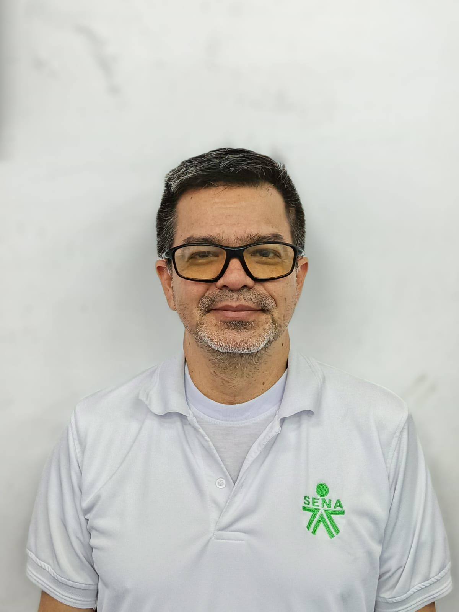

Lorena Parra
Orientadora Vocacional
La Tecnoacademia ha impulsado a nuevas generaciones
de estudiantes hacia el dominio
de las tecnologías emergentes,
formando líderes apasionados por la ciencia y ciudadanos
preparados
para construir el futuro.
Potenciar el pensamiento científico y tecnológico de los jóvenes mediante el aprendizaje experimental y el uso de tecnologías emergentes, formando ciudadanos innovadores capaces de resolver retos reales de su entorno.
la Tecnoacademia se consolidará como el ecosistema de aprendizaje más influyente en la formación de talentos científicos y tecnológicos. Preparando a una generación de ciudadanos innovadores que lideren la cuarta revolución industrial y el desarrollo sostenible de sus regiones.
Fomentamos el pensamiento disruptivo para crear soluciones tecnológicas que transformen el entorno social y productivo.
Promovemos la curiosidad científica y el método experimental como base para el descubrimiento de nuevos conocimientos.
Creemos en el poder del trabajo en equipo y el intercambio de saberes para alcanzar metas complejas y multidisciplinarias.
Buscamos los más altos estándares en el manejo de herramientas tecnológicas y competencias científicas aplicadas.
Nuestro equipo se destaca por su compromiso, responsabilidad y trabajo colaborativo, siempre enfocado en lograr resultados de calidad. Aportamos habilidades y creatividad para enfrentar cada desafío con soluciones innovadoras.
Orientadora Vocacional

Profesional G9 - Dinamizador

Facilitador
Materiales y Biotecnologia

Facilitador
Economía Popular y Campesina

Facilitador
Tics e Inteligencia artificial

Facilitador
Diseño de productos
Descubre un mundo de posibilidades donde tus ideas se convierten en realidad.
¡El mañana no se espera, se construye hoy en la TecnoAcademia!